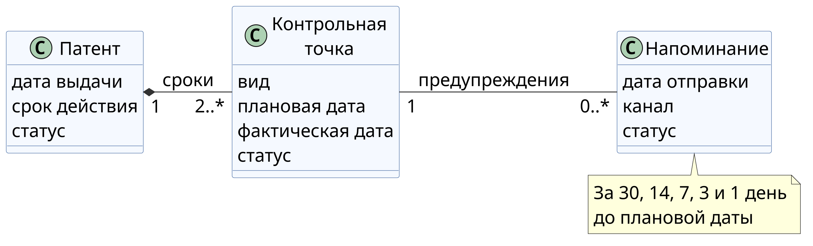
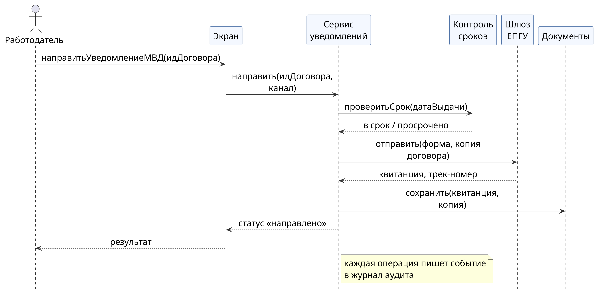

Книжка для защиты: шесть лабораторных по порядку, десять диаграмм, разбор одной операции и двадцать вопросов.
Малышева Елена · Макеев Глеб
Полные материалы: github.com/mflkee/fms-course
1. Что мы сделали
Пять предложений, из которых состоит вся защита. Их надо уметь сказать без бумажки.
Мы моделировали подсистему «Действия после получения патента» — пункты 7.1 и 7.2 дорожной карты.
В ней две обязанности с одним сроком: иностранный гражданин должен трудоустроиться в течение
2 месяцев с даты выдачи патента (7.1), а работодатель — уведомить МВД после заключения договора
и тоже не позднее 2 месяцев с даты выдачи (7.2).
Поэтому срок считается от даты выдачи патента, а основной исполнитель меняется:
в 7.1 действует гражданин, в 7.2 — работодатель.
Работа шла по цепочке: прецеденты → модель предметной области → операции и диаграммы
последовательностей → диаграммы взаимодействия → классы проектирования → код.
Сквозная нить — девять инвариантов: правил, которые верны всегда. Из них получаются
проверки в коде и тесты.
Цепочка: каждая лабораторная отвечает на один вопрос
№
Вопрос
Что получилось
1
Кто и зачем пользуется системой?
7 прецедентов, 8 акторов
2
Из каких понятий состоит тема?
18 классов, 9 инвариантов
3
Что система умеет снаружи?
16 операций, 19 диаграмм последовательностей
4
Как она это делает внутри?
16 диаграмм взаимодействия объектов
5
Какие обязанности у объектов?
46 классов проектирования
6
Работает ли это?
код, 28 маршрутов, 84 теста
Цифры, которые спрашивают
Прецеденты
7
Акторы
8
Классы модели
13 + 5 = 18
Инварианты
9
Системные операции
16
Диаграммы послед.
19
Диаграммы взаимодействия
16
Классы проектирования
46
HTTP-маршруты
28
Тесты
84
Главная формулировка для ответа: «Каждый следующий шаг не переделывает предыдущий, а уточняет.
Спросят, откуда в коде такой класс, — отвечаю: он появился на шаге N из вот этой обязанности».
2. Как читать диаграммы
Четыре типа диаграмм — четыре способа смотреть. Больше в работе не используется.
Диаграмма прецедентов (лаб. 1)
Человечек — актор: тот, кто получает результат. Овал — прецедент: обязанность системы
(не кнопка и не экран). Линия — кто инициирует прецедент. Рамка — граница системы:
всё, что внутри, делает система, всё, что снаружи, — внешние системы. Читать так: слева основные
акторы, справа внешние системы, в середине — что система обязана сделать.
Диаграмма классов (лаб. 2, 5)
Прямоугольник — класс (понятие). Линия с числами — связь и кратность: сколько объектов
участвует («1» — один, «0..*» — много). Закрашенный ромб — композиция: часть не существует
без целого (контрольные точки без патента). Треугольник — наследование. Читать так: найди главный
класс (у нас «Патент»), потом смотри, что к нему привязано и с какой кратностью; числа и есть инварианты.
Диаграмма последовательностей (лаб. 3, 4)
Прямоугольник сверху — участник, пунктир вниз — его линия жизни, сплошная стрелка —
вызов, пунктирная стрелка — возврат результата. Время идёт сверху вниз. Читать так: сверху вниз,
слева направо: кто кого позвал и что получил в ответ. В лаб. 3 участник один — «Система» (чёрный ящик),
в лаб. 4 — внутренние объекты.
Чем отличаются лаб. 3 и лаб. 4
Лаб. 3 — снаружи
Лаб. 4 — внутри
Участники
актор и одна «Система»
экран, сервисы, шлюзы, хранилища
Видно
какие операции вызывает актор
в каком порядке объекты обмениваются сообщениями
Сколько
19 (сценарии)
16 (по одной на операцию)
В книжке десять диаграмм: прецеденты, ядро модели, сроки и напоминания, четыре сценария из лаб. 3,
два внутренних взаимодействия и фрагмент классов проектирования. Остальные 32 диаграммы есть
в репозитории — их достаточно уметь открыть и сказать, что на них изображено.
Обозначения одним взглядом
Знак
Что значит
человечек
актор — роль человека или внешней системы
овал
прецедент — обязанность системы
прямоугольник
класс (лаб. 2, 5) или участник (лаб. 3, 4)
число на линии: 1, 0..*
кратность связи — сколько объектов участвует
закрашенный ромб
композиция: часть живёт только внутри целого
треугольник
наследование: подкласс — частный случай
сплошная стрелка вниз
вызов: «сделай это»
пунктирная стрелка вверх
возврат результата
номер на линии
порядок сообщений во времени
3. Лабораторная 1. Прецеденты
Задача: по тексту дорожной карты понять, кто пользуется системой и что она обязана делать.
Что сделали. Провели границу: всё, что происходит до выдачи патента, — предусловия (разделы 1–6
дорожной карты), а выдача и аннулирование патента — работа МВД. Поэтому МВД у нас вспомогательный актор.
Получилось 8 акторов: три основных (иностранный гражданин, работодатель, администратор) и пять
вспомогательных (МВД, ЕПГУ, Почта, ФНС, банк). Прецедентов семь: четыре по теме (учёт патента,
трудоустройство, уведомление МВД, контроль срока) и три расширения (НДФЛ, прекращение договора, реестр).
Что сказать. «Прецедент — это обязанность системы, которая даёт исполнителю измеримый результат.
У темы два основных исполнителя, потому что 7.1 адресован гражданину, а 7.2 — работодателю. Вспомогательные
акторы систему обслуживают: через ЕПГУ и Почту уходит уведомление, ФНС и банк нужны для платежей НДФЛ».
Рис. 1. Прецеденты: 3 основных актора, 5 вспомогательных, 7 прецедентов.
Упрощённая версия; полная — в репозитории, лаб. 1.
Что спросят. «Почему МВД не основной актор?» — Потому что система не принимает решений
по патенту: она готовит, отправляет и хранит доказательства уведомления, а принимает его ведомство.
«Почему прецедентов семь, если пунктов два?» — Пункты — это обязанности разных исполнителей,
а не сценарии; плюс расширения, без которых тема не доводится до конца.
Детали. Работодатель и заказчик по ГПХ — один актор: одинаковый интерес и одинаковый интерфейс,
а различие фиксируется атрибутом договора. Медицинские и образовательные организации, ФГУП «ПВС», МФЦ, страховая
компания, профсоюз, СОУТ и принимающая сторона намеренно не включены: их результаты — предусловия темы. Уровни прецедентов: П01–П03, П06 — задача
пользователя, П04, П05, П07 — вспомогательные функции системы.
4. Лабораторная 2. Модель предметной области
Задача: описать понятия темы и правила, которые выполняются всегда.
Что сделали. Существительные из спецификаций стали классами: 13 корневых и 5 подклассов,
всего 18. Ядро — цепочка «иностранный гражданин → патент → договор → уведомление МВД». У гражданина
может быть несколько патентов, но действующий — только один; на патент — не более одного действующего
договора; по договору — ровно одно уведомление, к нему прикладываются доказательства отправки.
Абстрактных класса два: «Договор» (трудовой или ГПХ) и «Пользователь» (три роли).
Что сказать. «Девять инвариантов — это утверждения, истинные в любой момент времени.
Из них получаются предусловия операций, проверки в сервисах и тесты. Например: на патент не более
одного действующего договора; профессия по договору должна входить в перечень профессий патента;
уведомление не раньше договора и не позднее двух месяцев с даты выдачи патента».
уведомление — не раньше договора и не позднее 2 месяцев с даты выдачи
ИНВ-3
договор — не позднее 2 месяцев с даты выдачи патента
ИНВ-4
профессия по договору входит в перечень профессий патента
ИНВ-5
патент действителен при непрерывной уплате НДФЛ
ИНВ-6
не более одного действующего патента, срок до 12 месяцев
ИНВ-7
сумма платежа равна стоимости патента в регионе
ИНВ-8
уведомление и доказательства хранятся бессрочно
ИНВ-9
точки и напоминания не существуют без патента
4.1. Сроки и напоминания
Самая спрашиваемая часть модели: как из одной даты получается вся дисциплина сроков.
Как это устроено. У патента есть дата выдачи — единственная точка отсчёта. От неё система
считает дату «трудоустроиться не позднее» (плюс два месяца) и создаёт минимум две контрольные точки:
заключить договор и направить уведомление. У каждой точки есть плановая дата, фактическая дата и статус,
а к каждой точке привязана серия напоминаний — за 30, 14, 7, 3 и 1 день.

Рис. 3. Сроки: композиция «патент → контрольные точки» и напоминания по каждой точке.
Два решения, которые любят спрашивать. Первое: «два месяца» — это календарные месяцы
с прижатием к концу месяца (31 января плюс месяц — 28 или 29 февраля). В законе это не уточнено,
поэтому мы зафиксировали правило явно в одном классе — «Модуль контроля сроков». Второе: поздний ввод
патента срок не сдвигает. Если патент выдан 1 марта, а в систему его внесли 20 апреля, дедлайн
всё равно 1 мая — система считает от даты выдачи и показывает остаток, а не начинает отсчёт заново.
Что сказать. «Дедлайн живёт в одном месте: модуль контроля сроков. Точки — это композиция:
без патента их не существует, при архивации или прекращении патента они каскадно отменяются.
Напоминания — отдельная сущность, потому что важно не только предупредить, но и зафиксировать факт
предупреждения».
Что спросят. «Почему контрольная точка одна, а не четыре класса?» — Структура одинаковая
(план, факт, статус), различается только вид. «Почему напоминание — класс, а не флаг?» — Нужны дата,
канал и статус доставки; это факт, который может понадобиться как доказательство.
5. Лабораторная 3. Операции и диаграммы последовательностей
Задача: показать систему снаружи — какие операции у неё есть и как ими пользуются.
Что сделали. Описали 16 системных операций (у каждой — параметры, результат, предусловия
и постусловия) и нарисовали 19 диаграмм последовательностей: 7 основных сценариев и 12 альтернатив.
На этих диаграммах система — «чёрный ящик»: видны только вызовы операций и возвраты, внутренних
объектов нет.
Что сказать. «Диаграмм 19, а операций 16, потому что диаграмма — это сценарий (путь),
а операция — это функция. Одна операция встречается и в основном сценарии, и в альтернативе».
Ключевые операции по теме: 1 «зарегистрировать патент» — вход в подсистему, 4 «заключить договор» —
пункт 7.1, 6 «направить уведомление МВД» — пункт 7.2, 11 «платёж НДФЛ» — условие жизни патента.
Рис. 4. Операция 1: гражданин вносит патент. Система проверяет три инварианта,
считает срок и создаёт контрольные точки.Рис. 5. Операция 4 (пункт 7.1): договор. Проверяются ИНВ-1, ИНВ-3, ИНВ-4.
5.1. Продолжение: уведомление и НДФЛ
Рис. 6. Операция 6 (пункт 7.2): работодатель направляет уведомление. Перед отправкой
проверяется срок, после — сохраняются квитанция и копия договора (ИНВ-2, ИНВ-8).Рис. 7. Операции 11–12: платёж НДФЛ. Сумма сверяется со стоимостью патента в регионе,
проверяется непрерывность оплаты (ИНВ-5, ИНВ-7).
Шестнадцать операций и их инварианты
№
Операция
Класс
Инварианты
1
зарегистрироватьПатент
СервисПатентов
ИНВ-4, 6, 9
2
пометитьПатентАрхивным
СервисПатентов
ИНВ-6, 9
3
получитьСведенияОпатенте
СервисПатентов
ИНВ-4, 6
4
заключитьДоговор
СервисДоговоров
ИНВ-1, 3, 4
5
отменитьДоговор
СервисДоговоров
ИНВ-1
6
направитьУведомлениеМВД
СервисУведомлений
ИНВ-2, 8
7
зафиксироватьВозвратУведомления
СервисУведомлений
ИНВ-2, 8
8
настроитьНапоминания
СервисНапоминаний
ИНВ-9
9
пересчитатьСрокиПатента
МодульКонтроляСроков
ИНВ-2, 3, 9
10
зафиксироватьНарушениеСрока
МодульКонтроляСроков
ИНВ-2, 3
11
зарегистрироватьПлатёжНДФЛ
СервисНДФЛ
ИНВ-5, 7
12
подтвердитьПлатёж
СервисНДФЛ
ИНВ-5, 7
13
зафиксироватьПрекращениеПатентаНеуплата
СервисНДФЛ
ИНВ-5, 9
14
прекратитьДоговор
СервисДоговоров
ИНВ-1, 8
15
сформироватьРеестр
МодульОтчётности
ИНВ-2, 3
16
выгрузитьРеестр
МодульОтчётности
ИНВ-8
Почему операций 16. Отдельная операция введена для каждого изменения состояния, предусмотренного сценариями. Альтернативные ветви потребовали собственных операций: архивирование патента, отмена черновика договора, фиксация возврата письма, подтверждение платежа, прекращение из-за неуплаты. Без них эти ветви меняли бы состояние в обход спецификации.
Контракт операции 6 — как он выглядит
Параметры
идентификатор договора; канал (ЕПГУ или почта); подтверждение — подпись и дата либо дата, трек-номер и опись
Результат
проект формы с остатком срока, затем уведомление: канал, квитанция или трек, дата, статус
Предусловия
договор заключён; патент действует; уведомление не раньше договора и не позднее двух месяцев с даты выдачи (ИНВ-2)
Постусловия
статус «направлено»; доказательства сохранены бессрочно (ИНВ-8); точка «направить уведомление» закрыта; договор переведён в состояние «уведомление направлено»
Как читать таблицу. Второй столбец — трассировка в лаб. 5, четвёртый — какие правила проверяет операция. Если на защите спросят «где проверяется ИНВ-3», ответ: в операциях 4, 9, 15, в сервисе договоров и модуле контроля сроков.
6. Лабораторная 4. Взаимодействие объектов
Задача: показать, как система выполняет операцию изнутри.
Что сделали. На каждую из 16 операций построили одну диаграмму взаимодействия: какие объекты
участвуют и в каком порядке они обмениваются сообщениями. Всего 16 диаграмм, 144 объекта и 196 сообщений,
компоненты нескольких видов: экран, сервис, реестр, шлюз, документ, журнал аудита.
Что сказать. «Это тот же сценарий, что в лаб. 3, но раскрытый внутрь. Видно, что запрос идёт
по слоям: экран передаёт его сервису, сервис проверяет сроки, обращается к шлюзу внешней системы,
сохраняет доказательства и пишет событие в журнал аудита. Ни один объект, кроме сервиса, не решает,
можно ли отправлять уведомление».

Рис. 8. Операция 6 «направить уведомление МВД»: путь запроса по объектам.Рис. 9. Операция 1 «зарегистрировать патент»: создание агрегата «патент + контрольные точки».
6.1. Ключевые операции и их участники
Полная таблица — в репозитории; на защите достаточно знать эти три.
Операция
Объектов
Сообщений
Главные участники
1. зарегистрировать патент
11
14
сервис патентов, контроль сроков, справочник регионов, реестр патентов
6. направить уведомление МВД
12
20
сервис уведомлений, права доступа, шлюз ЕПГУ, хранилище документов
Почему одна операция — одна диаграмма. Так требует задание, и это удобно: диаграмма становится
«единицей проверки». Если поменялась операция — правится ровно одна диаграмма, а не весь пакет.
Остальные тринадцать устроены так же, но короче: от 6 до 11 объектов.
Что спросят. «Чем это отличается от лаб. 3?» — Там был чёрный ящик и внешние вызовы, здесь —
внутренние объекты и порядок сообщений. «Почему на лаб. 3 нет шлюза ЕПГУ, а здесь есть?» — Шлюз
внутри системы, а на лаб. 3 видно только то, что снаружи. «Что делает журнал аудита?» — Пишет событие
по каждой операции; в него же попадают отказы по правам доступа.
Что происходит в журнале аудита. Каждая операция пишет событие: кто, что и когда сделал,
какой результат. Туда же попадают отказы по правам доступа и ручной ввод платежа. Журнал — не украшение:
он нужен, чтобы доказать, что уведомление отправлено вовремя, а данные не правились задним числом.
Детали, которые стоит помнить. Права проверяет отдельный модуль, а не сам сервис уведомлений:
он нужен трём операциям (получение сведений, реестр, выгрузка). Платёж НДФЛ идемпотентен: повтор
за тот же период с той же суммой возвращает существующий платёж, а не создаёт дубль.
7. Лабораторная 5. Классы проектирования
Задача: превратить объекты в классы — без привязки к языку программирования.
Что сделали. Использовали схему BCE: граничный слой — управляющий — сущности. Всего 46 классов:
7 экранов, 10 управляющих, 19 сущностей, 7 хранилищ и 3 шлюза. Зависимости идут только вниз:
экран знает управляющий слой, управляющий — сущности и хранилища, сущности не знают ничего внешнего.
Поэтому правило «два месяца» живёт в одном классе — «Модуль контроля сроков».
Что сказать. «Каждая из шестнадцати операций имеет свой метод в управляющем классе — это и есть
трассировка. Операция 1 — метод «зарегистрировать патент» в сервисе патентов; он обращается к справочнику
регионов за стоимостью и профессиями, к модулю контроля сроков за дедлайном и точками, к реестру —
за сохранением. Модель не привязана к языку: вместо типов программирования используются предметные —
дата, сумма, идентификатор».
Что спросят. «Почему 46 классов, если в модели было 18?» — 18 сущностей плюс отчёт-реестр,
остальное — экраны, управляющие классы, хранилища и шлюзы. «Почему хранилищ 7?» — По одному на каждый
реестр плюс справочники: одно общее хранилище было бы «бог-объектом». «Почему BCE, а не MVC?» — BCE
описывает обязанности («показать», «проверить», «сохранить»), а не структуру фреймворка.
Рис. 10. Операция 1 в классах: экран → сервис → сущности, хранилища и модуль сроков.
Стереотипы BCE подписаны на блоках.
Трассировка: операция → класс → метод
№
Операция
Метод
1
зарегистрироватьПатент
СервисПатентов.зарегистрироватьПатент()
4
заключитьДоговор
СервисДоговоров.заключить()
6
направитьУведомлениеМВД
СервисУведомлений.направить()
9
пересчитатьСрокиПатента
МодульКонтроляСроков.пересчитатьСроки()
11
зарегистрироватьПлатёжНДФЛ
СервисНДФЛ.зарегистрироватьПлатёж()
15
сформироватьРеестр
МодульОтчётности.сформировать()
8. Лабораторная 6. Реализация
Задача: доказать, что модель работоспособна. Код повторяет модель, а не наоборот.
Что сделали. Написали приложение на Python и FastAPI, сохранив слои и имена из лабораторных 2–5.
Реализованы все 16 операций, 28 маршрутов, 84 теста. На каждый из девяти инвариантов есть отдельный тест.
Хранилища — в памяти, внешние системы — заглушки: это учебная модель.
lab6-implementation/
├── app/boundary/ экраны: роутеры и схемы запросов
├── app/control/ сервисы, invariants.py, планировщик
├── app/entity/ сущности модели (патент, договор…)
├── app/repository/ хранилища в памяти
├── app/gateway/ ЕПГУ, Почта, ФНС (заглушки)
└── tests/ 84 теста, включая test_invariants.py
Что сказать. «Инварианты проверяются в сервисах, а не в роутерах: роутер можно обойти,
а сервис — нет. Поэтому все девять правил лежат в одном файле и вызываются из методов операций.
Трассировка сквозная: прецедент → операция → класс → метод → эндпоинт → тест».
app/entity/ — патент, договор, уведомление, деньги, часы
хранилища (7)
app/repository/ — в памяти, без метода удаления
шлюзы (3)
app/gateway/ — ЕПГУ, Почта, ФНС с режимом отказа
Что спросят. «Что здесь учебное?» — Хранилища в памяти, шлюзы-заглушки, аутентификация
по заголовку, файлы хранятся как метаданные. «Что дальше?» — База данных, реальные шлюзы,
фоновый планировщик.
Три ограничения, которые лучше назвать самому: данные теряются при перезапуске;
реальные ЕПГУ, Почта и ФНС не подключены; электронная подпись не проверяется.
9. Одна операция целиком
Главное упражнение перед защитой. Возьми операцию 4 «заключить договор» и проведи
её через все шесть работ — по памяти, потом проверь.
Шаг
Что должно сойтись
Прецедент
П02 «Трудоустройство», основной исполнитель — иностранный гражданин (п. 7.1)
POST /contracts → метод сервиса → тест в test_contracts.py
Фраза-закрытие: «Вот одна обязанность на всех шести уровнях. Если меняется требование,
я знаю, какие файлы править: прецедент, модель, контракт, диаграмму, класс и тест».
То же самое для операции 1
П01 «Учёт патента» → операция 1 → рис. 4 → рис. 9 → СервисПатентов.зарегистрироватьПатент()
→ POST /patents → test_patents.py. Если сможешь рассказать обе — этого
с запасом хватает на четвёрку.
10. Спорные решения: почему так, а не иначе
Это те вопросы, где проверяют не память, а мышление. Ответ на каждый — два предложения.
Почему операций шестнадцать?
Альтернативные сценарии потребовали собственных операций: архивирование патента, отмена черновика
договора, фиксация возврата письма, подтверждение платежа, прекращение из-за неуплаты. Без них эти ветви
меняли бы состояние в обход спецификации.
Почему 19 диаграмм при 16 операциях?
Диаграмма — сценарий, операция — функция. Одна и та же операция встречается в основном сценарии
и в альтернативе, поэтому путей больше, чем функций.
Почему классов 18, а не больше?
Мы выносили в класс только то, у чего есть собственное поведение и жизненный цикл. Должность —
атрибут договора, а вид деятельности — справочник, потому что на него проверяется инвариант.
Почему ИНВ-3 не блокирует заключение договора с опозданием?
Система ведёт фактические отношения: договор мог быть заключён, просто поздно. Блокировка скрыла бы
факт, поэтому система помечает просрочку и фиксирует нарушение отдельной операцией, а не отказывает.
Почему просроченное уведомление по умолчанию даёт отказ?
Это юридически значимое действие: отправка возможна только с явным подтверждением, и тогда
уведомление получает статус «просрочено». Так жёсткость нормы не теряется, но и работа не блокируется
молча.
Почему инварианты в сервисах, а не в роутерах?
Роутер можно обойти — тесты вызывают сервис напрямую. Инвариант должен жить рядом с моделью,
иначе рано или поздно появится второй вход, который его не проверяет.
Почему «ОтчётРеестр» стал классом только в лаб. 5?
Операция 16 ссылается на сохранённый реестр по идентификатору, значит у результата есть собственный
жизненный цикл: его фиксируют и хранят. Остальные результаты — проекции, они не хранятся.
Почему «Документ» без наследования?
Поведение одинаковое, различается только тип содержимого: патент, договор, квитанция, опись, чек.
Наследование дало бы пять классов без единого различия в поведении.
Почему в модели 7 хранилищ, а в коде 15?
Семь из модели плюс восемь инфраструктурных: пользователи, журнал аудита, сессии и другие.
Состав сущностей при этом не менялся.
Почему хранилища в памяти?
Учебная модель: важно показать инварианты и слои, а не инфраструктуру. Интерфейсы репозиториев
готовы к замене на базу данных, менять пришлось бы только реализацию.
11. Вопросы и короткие ответы
Что моделировали?
Подсистему «Действия после получения патента»: трудоустройство за 2 месяца с даты выдачи патента
и уведомление МВД после договора. Остальные разделы дорожной карты — предусловия или чужие темы.
От какой даты считаются два месяца?
От даты выдачи патента. Поздний ввод в систему срок не сдвигает.
Почему два основных исполнителя?
Пункт 7.1 адресован гражданину, пункт 7.2 — работодателю. Поэтому основной исполнитель меняется
от прецедента к прецеденту.
Почему прецедентов семь?
Четыре обязанности по теме и три расширения — НДФЛ, прекращение договора, реестр. Без НДФЛ патент
«живёт» только до первого уведомления.
Сколько акторов и какие?
Восемь: три основных (гражданин, работодатель, администратор) и пять вспомогательных (МВД, ЕПГУ,
Почта, ФНС, банк).
Сколько классов в модели?
13 корневых и 5 подклассов, всего 18. Абстрактные только два: договор и пользователь.
Что такое инвариант?
Утверждение, истинное в любой момент. Из него получается предусловие операции, проверка в сервисе
и тест.
Как считается «два месяца»?
Календарные месяцы с прижатием к концу месяца: 31 января плюс месяц — 28 или 29 февраля. Правило
записано в модуле контроля сроков.
Почему диаграмм 19, а операций 16?
Диаграмма — сценарий, операция — функция; одна операция используется в нескольких сценариях.
Чем отличаются лаб. 3 и лаб. 4?
Лаб. 3 — система как чёрный ящик, только внешние вызовы. Лаб. 4 — внутренние объекты и порядок
сообщений.
Почему операций шестнадцать?
Альтернативы потребовали своих операций: архивирование, отмена, возврат письма, подтверждение
платежа, прекращение из-за неуплаты.
Почему BCE, а не MVC?
BCE описывает обязанности, а не структуру фреймворка, и не задаёт ни язык, ни базу данных.
Почему в лаб. 5 нет типов языка?
Требование задания: предметные типы — дата, сумма, идентификатор — вместо строк, чисел и списков.
Где живёт правило «два месяца»?
В одном классе — модуле контроля сроков — и в проверках сервисов. В коде время передаётся через
часы, поэтому тесты не зависят от текущей даты.
Как обеспечена бессрочность хранения?
Структурно: в репозиториях нет метода удаления уведомлений и документов. Удалить невозможно
в принципе, а не «мы не забываем не удалять».
Как проверяются права доступа?
Отдельный модуль: аудитор формирует отчёт, но выгрузка принудительно обезличена; попытка выгрузить
персональные данные даёт отказ и запись в журнале.
Как хранятся деньги?
Десятичным типом, в JSON — строкой, чтобы не терять копейки при разборе на клиенте.
Как тестируются сроки?
Через подменяемые часы: тест задаёт дату, в коде нет обращений к «сегодня».
Что делает планировщик?
Запускает по расписанию операции 9, 10 и 13 — пересчёт сроков, фиксацию нарушения и прекращение
из-за неуплаты.
Что не реализовано?
База данных и ORM, реальные шлюзы ведомств, фоновая очередь, хранение файлов, форматная валидация
ИНН и серии патента.
Если точное имя класса или метода не помнишь — открой файл и покажи. Оценивают понимание
и трассировку, а не память.
12. Выступление на 8 минут
Время
Что сказать
Что открыть
0:30
Рамки: тема 7, только пункты 7.1 и 7.2
—
1:00
Лаб. 1: 7 прецедентов, 8 акторов, два основных исполнителя
рис. 1
1:00
Лаб. 2: 18 классов, ядро модели, 9 инвариантов
рис. 2–3
1:30
Лаб. 3: 16 операций, 19 сценариев; договор и уведомление
рис. 4–7
1:00
Лаб. 4: путь запроса по объектам
рис. 8–9
1:00
Лаб. 5: BCE, 46 классов, правило сроков в одном месте
рис. 10
1:30
Лаб. 6: 16 операций, 84 теста, инварианты в сервисах
Swagger, тесты
0:30
Ограничения и что дальше
—
Если спросят то, чего не знаешь
Спокойно: «Точно не помню — сейчас открою и покажу». Открываешь нужный файл и объясняешь смысл.
Это нормальный ответ инженера и выглядит сильнее, чем вымученное «не знаю».
Чек-лист перед парой
Рассказываю пять предложений из §1 без бумажки
Называю 7 прецедентов и 8 акторов
Рисую ядро модели и перечисляю инварианты
Объясняю разницу между лаб. 3 и лаб. 4
Провожу операции 1 и 4 от прецедента до теста
Отвечаю на вопросы из §10 своими словами
Называю три ограничения реализации
Полные материалы, все 42 диаграммы и код — в репозитории github.com/mflkee/fms-course.
Эта книжка — сокращённая версия: десять диаграмм вместо сорока двух, но все шесть работ на месте.